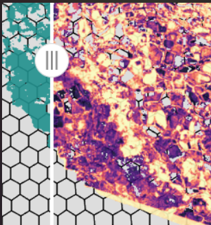

Interactive Swipe & Visual Analytics
Source:vignettes/interactive-swipe-analytics.Rmd
interactive-swipe-analytics.Rmd1. Overview & Dual-Layer Comparison
In precision spatial epidemiology and micro-environmental surveillance, field researchers and public health brigades need to contrast physical landscape features (such as high-resolution UAV orthomosaics or raw spectral layers) against derived eco-epidemiological indices (e.g., NDVI vs. Bare Soil, TWI vs. Water, or Orthomosaic vs. IMSR).
drones4health provides
d4h_mapview_swipe(), an interactive
side-by-side swipe slider powered by Leaflet and Mapview swipe
mechanics.
2. Interactive In-Browser Swipe Slider
You can render an interactive swipe comparison in your RStudio Viewer, Shiny dashboard, or R Markdown document:
library(drones4health)
library(terra)
# 1. Paths to UAV multispectral bands
nir_path <- "data/Ohuay_NIR.tif"
red_path <- "data/Ohuay_R.tif"
# 2. Compute NDVI and Bare Soil mask
r_ndvi <- d4h_ndvi(nir = nir_path, red = red_path)
r_soil <- d4h_bare_soil(ndvi_raster = r_ndvi, threshold = 0.15)
# 3. Interactive swipe slider (Left: NDVI, Right: Bare Soil Mask)
d4h_mapview_swipe(
x = r_ndvi,
y = r_soil,
col_x = "viridis",
col_y = c("#f5f5f5", "#8d5b4c"),
basemap = TRUE
)<img src="../man/figures/swipe_layer_ndvi.png" class="img-fluid rounded border" alt="NDVI Layer" width="90%">
<p class="small text-muted mt-1"><strong>Left Layer:</strong> NDVI (Vegetation Vigor & Canopy Roosting)</p><img src="../man/figures/swipe_layer_bare_soil.png" class="img-fluid rounded border" alt="Bare Soil Mask" width="90%">
<p class="small text-muted mt-1"><strong>Right Layer:</strong> Bare Soil Mask (< 0.15, Exposed Substrate)</p>3. Superimposing Surveillance Grids
You can also overlay operational surveillance grids (e.g. 50-meter hexagonal grids) directly over the swiping layers:
# Generate 50m operational hexagonal grid
grid_hex <- d4h_hex_grid(aoi = r_ndvi, cell_size = 50)
# Swipe with grid overlay for field brigades
d4h_mapview_swipe(
x = r_ndvi,
y = r_soil,
grid = grid_hex,
col_x = "viridis",
col_y = c("#f5f5f5", "#8d5b4c")
)
Figure 2: Interactive slider comparison with an operational 50m hexagonal grid overlay for vector control logistics.
4. Epidemiological Utility
- Substrate Validation: Disentangle bare ground, unpaved pedestrian pathways, and cleared peri-domestic clearings from natural vegetation without ground-truth ambiguity.
- Larviciding Planning: Locate small ditches, water pooling areas, and artificial structures across complex rural and peri-urban landscapes.
- Quality Control: Visually confirm that binary thresholds (e.g., NDVI < 0.15 for bare soil) accurately conform to real landscape features.